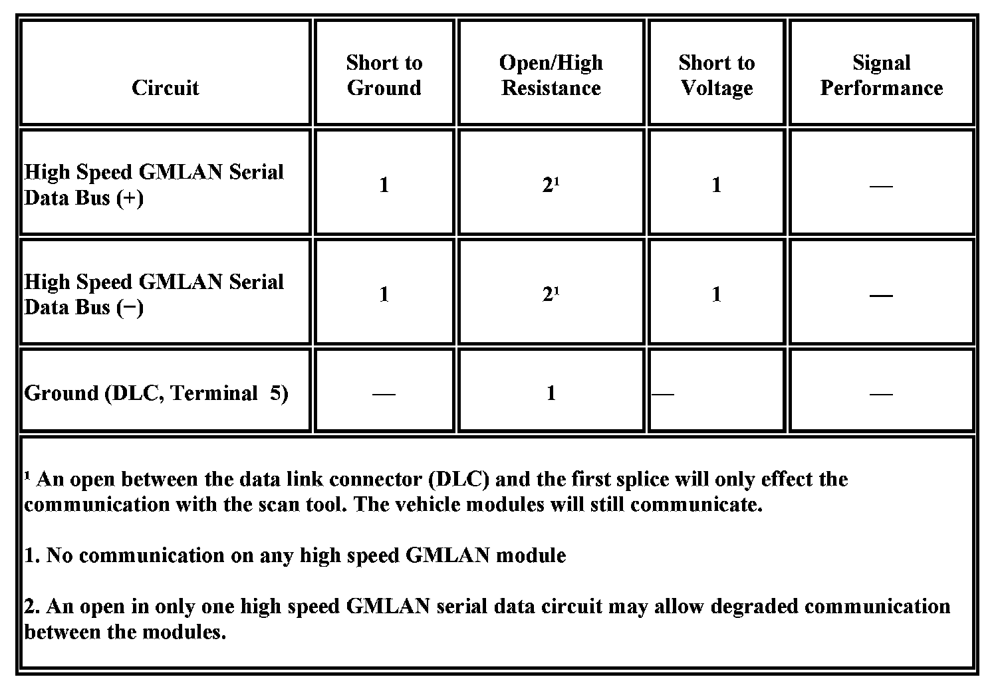

Scan Tool Does Not Communicate with High Speed GMLAN Device
Scan Tool Does Not Communicate with High Speed GMLAN Device
Diagnostic Instructions
- Perform the Diagnostic System Check - Vehicle prior to using this diagnostic procedure Initial Inspection and Diagnostic Overview.
- Review Strategy Based Diagnosis for an overview of the diagnostic approach Initial Inspection and Diagnostic Overview.
- Diagnostic Procedure Instructions provides an overview of each diagnostic category Initial Inspection and Diagnostic Overview.
Diagnostic Fault Information

Circuit/System Description
Modules connected to the high speed GMLAN serial data circuits monitor for serial data communications during normal vehicle operation. Operating information and commands are exchanged among the modules when the ignition switch is in any position other than OFF. The high speed GMLAN serial data circuits must be operational for the vehicle to start due to body control module (BCM) and engine control module (ECM)/powertrain control module (PCM) communications. The theft deterrent module and ECM/PCM exchange information using the BCM as the gateway module allowing communication between the high and low speed serial data busses. The low speed GMLAN serial data circuit must also be operational for vehicle starting.
Diagnostic Aids
- Sometimes, while diagnosing a specific customer concern or after a repair, you may notice a history U-code present. However, there is no associated "current" or "active" status. Loss-of-communication U-codes such as these can set for a variety of reasons. Many times, they are transparent to the vehicle operator and technician, and/or have no associated symptoms. Eventually, they will erase themselves automatically after a number of fault-free ignition cycles. This condition would most likely be attributed to one of these scenarios:
- A control module on the data communication circuit was disconnected while the communication circuit is awake.
- Power to one or more modules was interrupted during diagnosis
- A low battery condition was present, so some control modules stop communicating when battery voltage drops below a certain threshold.
- Battery power was restored to the vehicle and control modules on the communication circuit did not all re-initialize at the same time.
- If a loss-of-communication U-code appears in history for no apparent reason, it is most likely associated with one of the scenarios above. These are all temporary conditions and should never be interpreted as an intermittent fault, causing you to replace a part.
- Do not replace a control module reporting a U-code. The U-code identifies which control module needs to be diagnosed for a communication issue.
- Communication may be available between the BCM and the scan tool with the high speed GMLAN serial data system inoperative. This condition is due to the BCM using both the high and low speed GMLAN systems.
- An open in the DLC ground circuit terminal 5 will allow the scan tool to operate but not communicate with the vehicle. When the scan tool attempts to communicate with the vehicle a message "no CANdi module detected" will be displayed.
- The engine will not start when there is a total malfunction of the high speed GMLAN serial data bus.
- Technicians may find various Local Area Network (LAN) communication Diagnostic Trouble Codes (DTC) and no low speed GMLAN communications with the scan tool.
- The engine will not start when there is a total malfunction of the high speed GMLAN serial data bus.
These conditions may be caused by the installation of an aftermarket navigation radio module (see bulletins). Some customers may comment of one or more of the following concerns:
- Vehicle will not crank.
- Vehicle cranks but will not start.
- Vehicle stability enhancement system warning lights and messages.
- PRNDL gear indicator position errors.
- Tire Pressure Monitor (TPM) system warning lights.
Reference Information
Schematic Reference
- Data Communication Schematics Electrical Diagrams
- Control Module References Control Module References
Connector End View Reference
Master Electrical Component List
Electrical Information Reference
- Circuit Testing Component Tests and General Diagnostics
- Connector Repairs Component Tests and General Diagnostics
- Testing for Intermittent Conditions and Poor Connections Component Tests and General Diagnostics
- Wiring Repairs Component Tests and General Diagnostics
Circuit/System Testing
1. Test for less than 1 ohms between the DLC ground circuit terminal 5 and ground.
-> If greater than 1 ohms, test the ground circuit for open/high resistance.
2. Ignition OFF, disconnect the harness connector of the BCM.
3. Ignition ON, test for battery voltage between each voltage input circuit of the BCM and ground.
-> If less than battery voltage, test each voltage output circuit of the BCM for a short to ground, and each voltage input circuit of the BCM for a short to ground or and open/high resistance. If the circuits test normal, replace the faulty module.
4. Test for less than 1 ohms between each ground circuit of the BCM and ground.
-> If greater than 1 ohms, repair the ground circuit for an open/high resistance.
5. Attempt to communicate with the electronic brake control module (EBCM). Communication should not be available.
-> If communication is established, test or replace the resistor.
6. Ignition OFF, disconnect the harness connector of the suspension control module.
7. Attempt to communicate with the EBCM. Communication should not be available.
-> If communication is established, test the serial data circuits for a short between them, short to ground or a short to voltage between the suspension control module and the terminator resistor. If the circuits test normal, replace the suspension control module.
8. Ignition OFF, disconnect the harness connector of the distance sensing cruise control module.
9. Attempt to communicate with the EBCM. Communication should not be available.
-> If communication is established, replace the cruise control module.
10. Ignition OFF, disconnect the harness connector of the vehicle communication interface module (VCIM).
11. Attempt to communicate with the EBCM. Communication should not be available.
-> If communication is established, test the serial data circuits for a short between them, short to ground or a short to voltage between the between the VCIM and the suspension control module. If the circuits test normal, replace the VCIM.
12. Ignition OFF, disconnect BCM harness connector C3.
13. Test for infinite resistance between the serial data circuits of BCM harness connector C3 terminal 8 and ground and between BCM harness connector C3 terminal 9 and ground.
-> If less than infinite, test the circuit for a short to ground.
14. Ignition OFF, disconnect the harness connector of the ECM. Connect the harness connector C3 of the BCM.
15. Attempt to communicate with the EBCM. Communication should not be available.
-> If communication is established, replace the ECM.
16. Ignition OFF, disconnect the harness connector of the transmission control module (TCM).
17. Attempt to communicate with the EBCM. Communication should not be available.
-> If communication is established, test the serial data circuits for a short between them, short to ground or a short to voltage between the TCM and the ECM. If the circuits test normal, replace the TCM.
18. Ignition OFF, connect the harness connector of the suspension control module. Disconnect the harness connector of the EBCM.
19. Attempt to communicate with the suspension control module. Communication should not be available.
-> If communication is established, test the serial data circuits for a short between them, short to ground or a short to voltage between the EBCM and the TCM. If the circuits test normal, replace the EBCM.
20. Ignition OFF, disconnect the harness connector C3 of the BCM.
21. Test for less than 4.5 V between the high speed GMLAN serial data circuits of the DLC and ground.
-> If greater than 4.5 V, test the serial data circuit for a short to voltage.
22. Test for infinite resistance between the high speed GMLAN serial data circuit of the DLC and ground.
-> If less than infinite resistance, test the serial data circuit for a short to ground.
23. Test for infinite resistance between the high speed GMLAN serial data (+) and (-) circuits of the DLC.
-> If less than infinite resistance, test the serial data circuits for a short between them.
24. If the circuits test normal, replace the BCM.
Repair Instructions
Perform the Diagnostic Repair Verification after completing the repair.
- GMLAN Wiring Repairs Component Tests and General Diagnostics
- Control Module References for module replacement, setup, and programming Control Module References